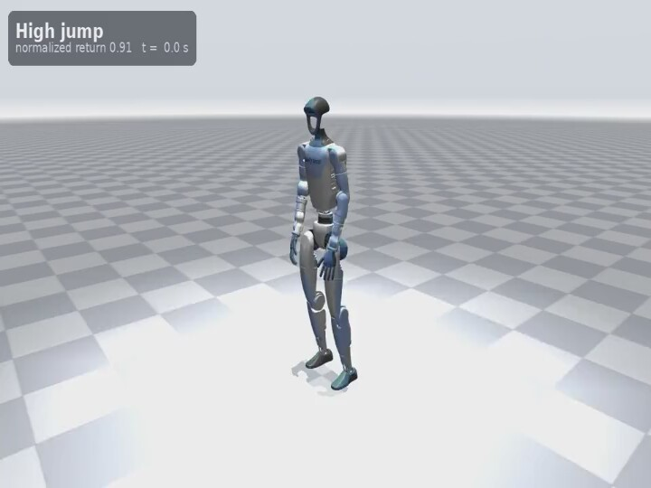

F14 · Meta Quest 원격조작과 π₀.₅
Quest로 F14의 팔과 그리퍼를 조작해 빨간 큐브를 집어 옮기는 시연을 만들었습니다. 카메라 영상과 로봇 동작을 함께 저장해 π₀.₅ 학습에 연결했습니다.
확인한 결과 · 원격조작부터 시연 저장과 정책 추론까지 연결하고, 시뮬레이션에서 모델의 동작을 영상으로 남겼습니다.
Meta Quest로 로봇을 조작하고 시연을 모아 π₀.₅를 학습시켰습니다. 손과 전신의 동작 변환, 휴머노이드 동작 추종, 작업 단계 라벨링까지 진행한 일곱 가지 연구를 정리했습니다.

Quest로 F14의 팔과 그리퍼를 조작해 빨간 큐브를 집어 옮기는 시연을 만들었습니다. 카메라 영상과 로봇 동작을 함께 저장해 π₀.₅ 학습에 연결했습니다.
확인한 결과 · 원격조작부터 시연 저장과 정책 추론까지 연결하고, 시뮬레이션에서 모델의 동작을 영상으로 남겼습니다.
Quest가 추적한 사람의 팔 움직임과 컨트롤러의 보행 명령을 V9에 전달했습니다. 테이블로 이동해 양팔로 박스를 들어 올리는 작업을 구성하고, 시연을 저장하면 학습용 데이터로 변환되도록 연결했습니다.
확인한 결과 · 원격조작과 상체 추적을 기록했고, π₀.₅ 학습 경로와 서로 다른 조건의 추론을 시험했습니다. 영상은 개별 실행 사례입니다.
Quest로 직접 녹화한 손동작을 Tesollo DG-5F 시뮬레이션에 옮겼습니다. 같은 입력으로 MANUS-style, AnyDex, Wuji, GeoRT 네 방법을 비교했습니다.
확인한 결과 · 손 펴기, 주먹, 손가락별 움직임과 핀치를 나란히 비교했습니다. 비교 결과를 바탕으로 AnyDex와 Wuji를 우선 검토 후보로 정리했습니다.
Unitree G1이 기준 동작을 따라 하도록 SuperMimic 학습과 평가를 재현했습니다. 동작 데이터를 준비하고, 학습한 정책과 기준 동작을 시뮬레이션에서 함께 볼 수 있도록 만들었습니다.
확인한 결과 · LAFAN1과 BONES-SEED에서 학습과 평가를 수행하고, 점프와 일어서기 등 전신 동작을 재생해 추종 결과를 확인했습니다.
BONES-SEED 전신 동작 추종 · 시뮬레이션 하이라이트
사람의 전신 움직임을 Unitree G1의 관절 동작으로 변환하는 Neural Motion Retargeting(NMR)을 검토했습니다. 공개 구현과 예제 데이터를 별도 저장소에 정리했습니다.
확인 자료 · 저장소에 공개 체크포인트로 추론하고 변환한 동작을 미리 보거나 파일로 저장하는 경로가 있습니다.
F26 정책과 시뮬레이션을 각 방문자의 브라우저에서 실행하도록 구성했습니다. 사용자가 동작을 선택하고, 재생을 멈추거나 속도를 조절할 수 있게 했습니다.
산출물 · 40개 기준 동작을 선택할 수 있는 브라우저 데모와 체크포인트 자동 게시 경로를 구축했습니다. 실시간 데모는 모델 파일을 제공하는 서버가 필요합니다.
Franka가 지정된 색 하나를 제외하고 나머지 블록을 그릇에 담는 작업을 구성했습니다. 시연에서 실제로 담은 색을 기준으로 단계별 지시문을 자동으로 붙이고, 마지막에는 종료 라벨을 기록했습니다.
확인한 결과 · 전체 지시문을 쓰는 π₀.₅와 단계 지시를 생성하는 정책의 실행을 비교했습니다. LIBERO 방식의 5스텝 재평가에서는 두 정책 모두 4개 배치에서 전체 작업 성공을 기록하지 못했습니다.